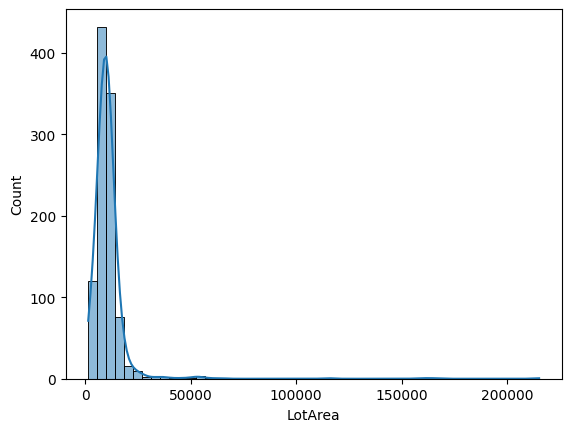
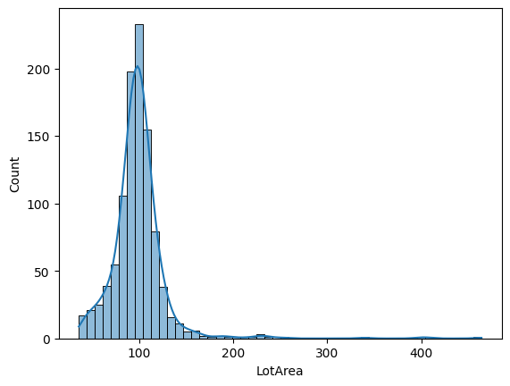
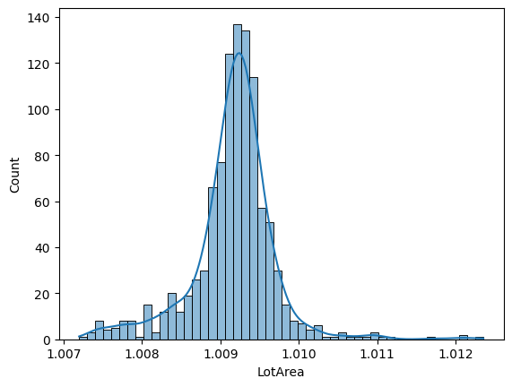
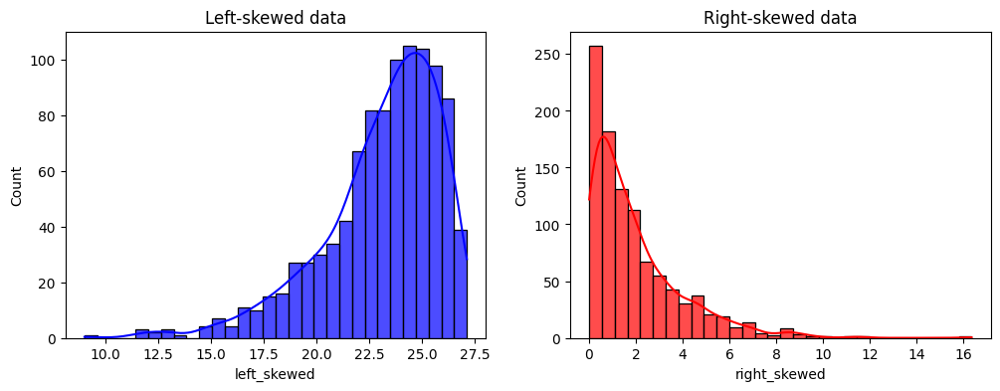
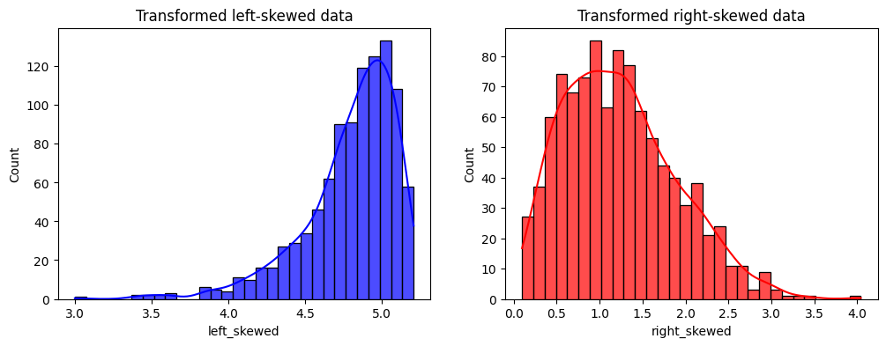
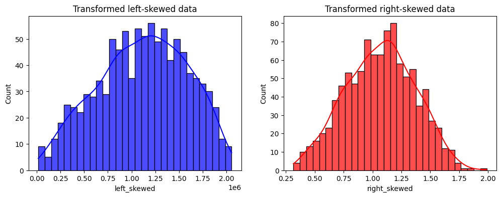

PowerTransformer#
Power transformations are a family of mathematical functions used to transform numerical variables into a more suitable shape for modeling. The transformation function is typically represented as \(x' = x^{\lambda}\), where \(x\) is the original variable and \(\lambda\) (lambda) is the transformation parameter.
These transformations help stabilize the variance, make the data adopt a more normal distribution-like shape, and/or improve the linearity of relationships.
Use of Power transformations#
Power transformations are particularly useful for meeting the assumptions of statistical tests, and models that require linear relationships between variables and homoscedasticity (constant variance across values). They can also help in reducing skewness in the data, i.e., by normalizing distributions.
Power transformations differ from scalers in that they modify the distribution of the data, typically to stabilize variance and normalize the distribution, whereas scalers simply adjust the scale of the data without altering its underlying distribution.
In short, power functions provide an excellent data analysis toolkit, especially for linear models (regression or classification).
Special cases of power transformations#
Most variable transformations, like the logarithm, the reciprocal and the square root, are special cases of power transformations, where the exponent (lambda) is 0, -1 and 0.5, respectively.
You can apply these transformations with PowerTransformer, as we will see
later in this page, or through dedicated transformers, like LogTransformer
and ReciprocalTransformer.
Which lambda should I choose?#
The challenge of power transformations resides in finding the right lambda for the transformation. In general, this consists of trial and error, or using generalization functions like the Box-Cox or the Yeo-Johnson transformation.
As general guidelines, if the variables are right-skewed we’d use lambda <1, and if the variables are left-skewed we’d use lambda >1.
Box-Cox transformation#
The Box-Cox transformation is a generalization of power transformations that finds an optimal lambda to stabilize variance and make the data more normally distributed. This transformation only accepts positive values.
Feature-engine’s BoxCoxTransformer() applies the Box-Cox transformation.
Yeo-Johnson transformation#
The Yeo-Johnson transformation extends the Box-Cox transformation to handle both positive and negative values, to find an optimal lambda for the transformation.
YeoJohnsonTransformer() applies the Yeo-Johnson transformation.
Other transformers#
Feature-engine also provides the following power transformers:
LogTransformerLogCpTransformerReciprocalTransformerArcsinTransformer
For more details about these variance stabilizing transformations, check the article Variance stabilizing transformations in machine learning.
Python example#
PowerTransformer() applies power transformations to numerical independent
variables. We’ll use the Ames House Prices’ dataset to see it in action.
First, let’s load the dataset and split it into train and test sets:
import numpy as np
import pandas as pd
import seaborn as sns
import matplotlib.pyplot as plt
from sklearn.preprocessing import scale
from sklearn.datasets import fetch_openml
from sklearn.model_selection import train_test_split
from feature_engine.transformation import PowerTransformer
# Load dataset
X, y = fetch_openml(name='house_prices', version=1, return_X_y=True, as_frame=True)
X.set_index('Id', inplace=True)
# Separate into train and test sets
X_train, X_test, y_train, y_test = train_test_split(
X, y, test_size=0.3, random_state=42
)
Now, let’s visualize the distribution of the LotArea variable:
sns.histplot(X_train['LotArea'], kde=True, bins=50)
In the following output, we can see that the original feature distribution is highly right-skewed:
Finding the right lambda for the power transformation is challenging, and it often requires trial an error. So let’s begin by trying the default coefficient (lambda), which is 0.5 (i.e., we’re applying a square root transformation):
# Set up the variable transformer (tf)
tf = PowerTransformer(variables = ['LotArea', 'GrLivArea'])
# Fit the transformer
X_train_transformed = tf.fit_transform(X_train)
# Plot histogram
sns.histplot(X_train_transformed['LotArea'], kde=True, bins=50)
And here’s the transformed feature distribution:
It looks better, huh!? It’s still right-skewed, but the variation is lower (let’s confirm it soon). Now, let’s try to pass an “optimal value” for the parameter λ (exp):
# Set up the variable transformer (tf)
tf_custom = PowerTransformer(variables = ['LotArea', 'GrLivArea'], exp=0.001)
# Fit the transformer
X_train_transformed_custom = tf_custom.fit_transform(X_train)
# Plot histogram
sns.histplot(X_train_transformed_custom['LotArea'], kde=True, bins=50)
In the following output, we can see the data now has a more Gaussian-like distribution, and the variance seems lower. Therefore, we can see that by using a custom lambda we can transform the variable’s distribution:
Power transformations are expected to reshape the data distribution, reducing the impact of extreme outliers and, therefore, lowering the variance.
Since the power transformation changes the scale of the data, we cannot directly compare the variance. Instead, we’ll compute the coefficient of variation (CV). The CV for a sample is defined as the ratio of the standard deviation to the mean, and it’s expressed as \(CV = \left(\frac{s}{\overline{x}}\right)\).
Let’s now use the CV to assess the impact of the data transformations on the variance.
# Compute coefficient of variation (CV)
def compute_cv(data):
"""Compute the coefficient of variation (CV) for a given dataset."""
return np.std(data, ddof=1) / np.mean(data) if np.mean(data) != 0 else np.inf
cv_raw_data = compute_cv(X_train['LotArea'])
cv_transformed_data = compute_cv(X_train_transformed['LotArea'])
cv_transformed_data_custom = compute_cv(X_train_transformed_custom['LotArea'])
print(f"""
Raw data CV: {cv_raw_data:.2%}
Transformed data exp:0.5 CV: {cv_transformed_data:.2%}
Transformed data exp:0.001 CV (custom): {cv_transformed_data_custom:.2%}
""")
In the following output, we can see the resulting CV for both original and transformed data:
Raw data CV: 105.44%
Transformed data exp:0.5 CV: 30.91%
Transformed data exp:0.001 CV (custom): 0.05%
By comparing the coefficient of variation (CV) for the raw and transformed data, the effectiveness of the transformation is noticeable. The CV for the original CV is higher than 1 (100%), which means that the variance is higher than the mean (due to the highly skewed data). The transformation with the squared root transformation (default exp parameter) resulted in a CV of approximately 31%. Finally, a power transformation with a lower exp parameter value resulted in 0.05% CV, drastically lower than the original and square-root transformed data.
It’s worth noting that despite exhibiting a low coefficient of variation (CV), which measures variability relative to the mean, a feature can retain enough absolute variance to effectively contribute to the performance of machine learning models, especially in algorithms that hinge on the assumption of data variability, like linear regression and other regression-based models.
Choosing lambda accordingly to the distribution#
In this section, we’ll further explore the impact of the lambda parameter for left- and right-skewed distributions.
First, let’s create a toy dataset with these distributions:
# Set random seed for reproducibility
np.random.seed(42)
# Generating right-skewed data using exponential distribution
right_skewed_data = np.random.exponential(scale=2, size=1000)
# Generating left-skewed data by flipping the right-skewed data
left_skewed_data = -np.random.gamma(shape=2, scale=2, size=1000) \
+ np.max(np.random.gamma(shape=2, scale=2, size=1000))
# Create dataframe with simulated data
df_sim = pd.DataFrame({
'left_skewed': left_skewed_data,
'right_skewed': right_skewed_data}
)
# Plotting the distributions
fig, axes = plt.subplots(ncols=2, figsize=(12, 4))
hist_params = dict(kde=True, bins=30, alpha=0.7)
sns.histplot(df_sim.left_skewed, ax=axes[0], color='blue', **hist_params)
sns.histplot(df_sim.right_skewed, ax=axes[1], color='red', **hist_params)
axes[0].set_title('Left-skewed data')
axes[1].set_title('Right-skewed data')
plt.show()
We see the distributions of the variables we created in the following output:
Now, let’s transform the data using PowerTransformer()
with the default lambda parameter (exp = 0.5):
# Set up the variable transformer (tf)
tf = PowerTransformer(variables = ['left_skewed', 'right_skewed'])
# Fit the transformer
df_sim_transformed = tf.fit_transform(df_sim)
# Plot histograms
fig,axes = plt.subplots(ncols=2, figsize=(12,4))
sns.histplot(
df_sim_transformed['left_skewed'], ax=axes[0], color='blue', **hist_params
)
sns.histplot(
df_sim_transformed['right_skewed'], ax=axes[1], color='red', **hist_params
)
axes[0].set_title('Transformed left-skewed data')
axes[1].set_title('Transformed right-skewed data')
plt.show()
In the following output we can see the distributions for each transformed variable:
It improved the distribution, but we can do way better!
As per the guidelines we mentioned earlier, we’ll use a lambda <1 for the right-skew distribution and a lambda >1 for the left-skew distribution:
# Set up the variable transformer (tf)
tf_right = PowerTransformer(variables = ['right_skewed'], exp=0.246)
tf_left = PowerTransformer(variables = ['left_skewed'], exp=4.404)
# Fit the transformers
tf_right.fit(df_sim)
tf_left.fit(df_sim)
# Plot histograms
fig,axes = plt.subplots(ncols=2, figsize=(12,4))
sns.histplot(
tf_left.transform(df_sim)['left_skewed'], ax=axes[0],
color='blue', **hist_params
)
sns.histplot(
tf_right.transform(df_sim)['right_skewed'], ax=axes[1],
color='red', **hist_params
)
axes[0].set_title('Transformed left-skewed data')
axes[1].set_title('Transformed right-skewed data')
plt.show()
In the following output we see the distribution of the transformed variables:
Now, the distribution looks more like a Gaussian one :)
Inverse transformation#
Feature-engine power transformers can reverse the transformation to obtain the original data representation. So for example, if we apply the square root transformation, the transformer can square the transformed data to obtain the original variable. This is useful to interpret the results of the machine learning models and present the results of the data analysis.
In this section, we will examine how to use inverse transformations.
First, let’s fit the transformer once again:
# Set up the variable transformer (tf)
tf = PowerTransformer(variables = ['left_skewed', 'right_skewed'])
# Fit the transformer
df_sim_transformed = tf.fit_transform(df_sim)
Now, let’s see the first rows of the original data:
df_sim.head(3)
In the following output we see the first rows of the original data:
left_skewed right_skewed
0 23.406936 0.938536
1 26.282836 6.020243
2 22.222784 2.633491
Let’s see the first rows of the transformed data:
df_sim_transformed.head(3)
In the following output we see the first rows of the transformed data:
left_skewed right_skewed
0 4.838072 0.968781
1 5.126679 2.453618
2 4.714105 1.622804
Finally, let’s see how we can reverse the transformation to obtain the original values:
tf.inverse_transform(df_sim_transformed).head(3)
Result of the inverse transformation:
left_skewed right_skewed
0 23.406936 0.938536
1 26.282836 6.020243
2 22.222784 2.633491
As we can see, the original data and the inverse transformed one are identical.
Considerations#
Power transformations are a powerful tool to transform data to meet the assumptions of statistical tests and linear regression models.
In practice, we’d use the BoxCoxTransformer() or
YeoJohnsonTransformer(), because they automatically find the best lambda
for the transformation. But automation is not always better.
Often the transformations do not return the desired output.
We should always follow up with an analysis of transformations, comparing the original and transformed distributions, to ensure that we obtain the results we expect.
Additional resources#
You can find more details about the PowerTransformer() here:
For more details about this and other feature engineering methods check out these resources:

Feature Engineering for Machine Learning#
Or read our book:

Python Feature Engineering Cookbook#
Both our book and course are suitable for beginners and more advanced data scientists alike. By purchasing them you are supporting Sole, the main developer of Feature-engine.